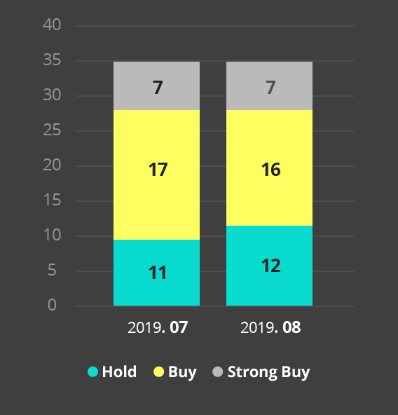

투자포인트
블룸버그 시장 컨센서스(리포트)에 따르면
버라이즌의 투자매력도는 “높음”으로 평가된다.
1.가장 적극적으로 5G단말 라인업 추가
2.전 세계 5G 상용화 및 지속적인 요금제 업샐링을
통한 상승 추세 지속.
3.T-모바일/스프린트 합병 완료
4.올해 기대배당수익률을 4.3%로 주가의 하방
경직성을 확보
등의 이유로 초기 5G시장 선도 중, 앞으로 실적
더 좋아질 것으로 예상된다.
2분기 서비스 매출 견조 및 비용 통제로
우수한 실적 기록
버라이즌은 2분기에 매출액 321억달러(-0.4% YoY, -0.2% QoQ), 영업이익 79억달러(+18.6% YoY, +1,8% QoQ)로 우수한 실적을 달성하였다. 실적 향상 사유는
1) 5G 상용화 및 요금제 업셀링을 통해 무선 서비스 매출이 증가하였고,
2) 통신 시장 경쟁 완화 기조로 마케팅비용이 감소하였으며,
3) 감가상각비가 소폭 감소했기 때문이었다
ARPA 상승/마케팅비용 감소,
실적 계속 우상향 할 듯
상반기 버라이즌은 우수한 실적을 기록했는데 하반기 및 내년 에도 그 추세가 이어질 것으로 전망된다. 그 이유는
1.5G 단말기 라인업 추가 및 5G 커버리지 도시 확대로 무선 ARPA 가 계속 상승할 것으로 예상되고
2.T-모바일/스프린트 합병이 빨라야 10월 중순에 마무리 될 수 있고 더 늦춰질 가능 성도 있어 하반기에 무분별한 마케팅비용 경쟁을 펼칠 가능성이 낮으며,
3.T-모바일/스프린트 합병 완료로 내년에 5G 경쟁이 본격화되어도 현재 T-모바일 스탠스 상 마케팅비 경쟁 보다는 5G 네트워크 품질 경쟁이 심화될 가능성이 높으며,
4.5G 투자로 올해 및 내년 CAPEX가 YoY 10% 이상 증가해도 작년까지 CAPEX가 감소추세여서 감가상각비가 큰 폭으로 증가할 가능성이 없기 때문이다. 실적 향상과 함께 최근 지지 부진하던 버라이즌 주가도 같이 우상향 할 것으로 기대된다.
-애널리스트 전망-

종합의견 = 매수
본 자료는 정보를 제공할 목적으로 작성되었습니다. 자료에 보여지는 내용은 신뢰할 만한 자료 및 정보로 얻어진 것이나, 그 정확성이나 완전성을 보장할 수 없으므로 투자자 자신의 판단과 책임하에 최종결정을 하시기 바랍니다. 따라서 어떠한 경우에도 고객의 주식투자의 결과에 대한 법적 책임소재의 증빙자료로 사용될 수 없습니다